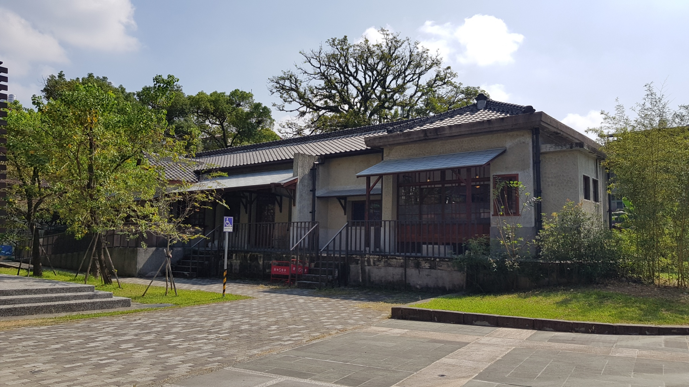

秋冬旅遊補助
9-12月最高省2000
美濃-文創中心
2015年底落成啟用的「美濃文創中心」座落於美濃最古老的永安老街，園區中高聳的老茄苳枝葉婆娑、綠樹成蔭，建築物分成三大主題，是結合歷史老建築、再造文化新基地的創意之作。 1902年興建的「美濃警察分駐所」是和洋融和的巴洛克歷史建物，經過多年修復整理，現在成為多功能的旅遊服務中心，遊客可以親近自在地欣賞建築物散發的古樸之美並體驗客家文化；小巧玲瓏的「日式宿舍」成為幼兒館；新建的教育藝文館則有大量藏書提供閱聽，更特別開闢專區收藏六堆客家主題書籍供民眾閱讀研究。連結三棟新、舊建築物的「開庒廣場」不定期舉辦各式創新藝文活動、戲劇音樂表演、客家市集，文創中心也延攬藝術家駐館，傳承並將客家文化發掦光大。美濃區自古以來鐘靈毓秀、藝文風氣鼎盛，更是客家文化重鎮，文創中心傳統與現代的融合除了見證美濃的歷史變遷，也成為體驗及認識客家文化的重要新地點。
相關資訊
電話
07-681-9265
地址
843高雄市美濃區永安路212號
開放時間
09:00–22:00
票價資訊
免費